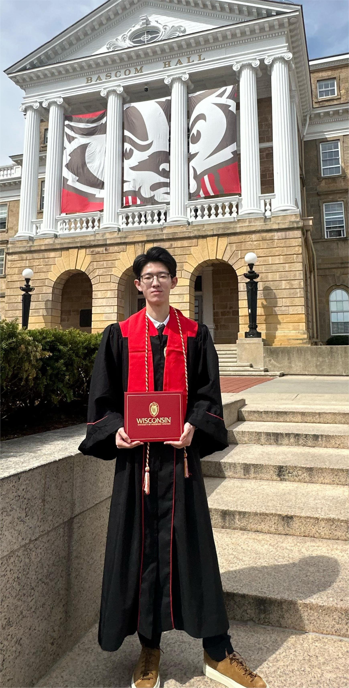
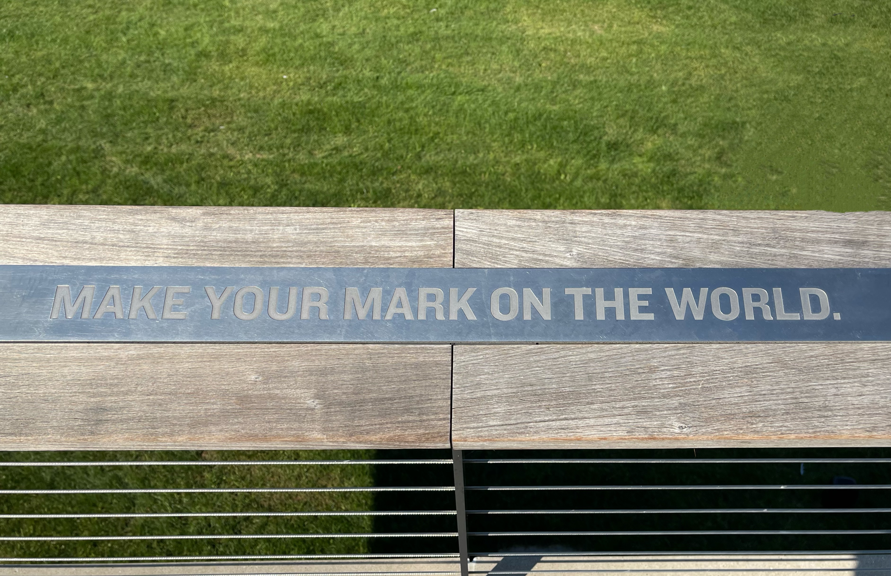
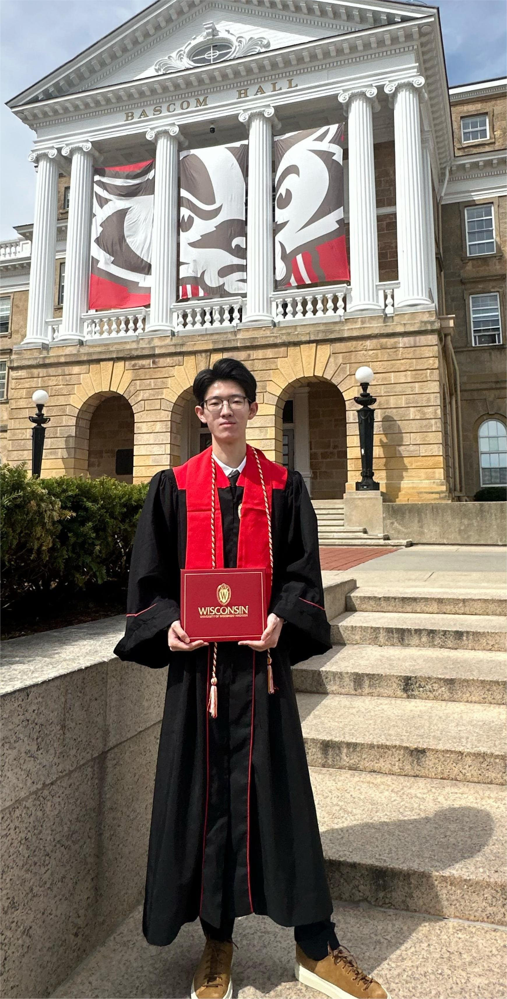
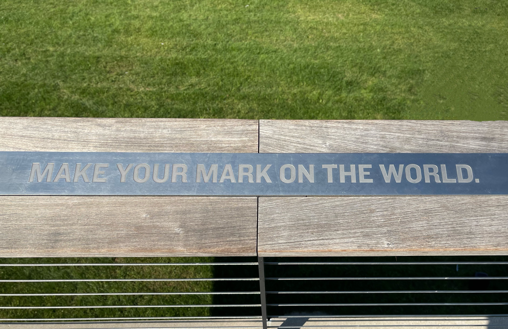

About Me
I’m Boyue Du, an electrical engineer passionate about intelligent electronics, power systems, and their applications in the automotive industry. I recently earned my B.S. in Electrical Engineering from the University of Wisconsin–Madison, where I developed advanced knowledge and hands-on experience in signal processing, machine learning, and applied physics. In Fall 2025, I will begin my M.S. in Electrical and Computer Engineering at UCLA, focusing on power system design and automotive innovation.
 



In my undergraduate life, curiosity led me to find my career path: engineering. Despite the challenging courses and heavy workload, I found joy in this process. Every night, when I walked tiredly to my dorm from Memorial Library, I felt enriched because I had learned something I didn't know before. Whenever I encountered elegant formulas derived by scientists like Fourier and Maxwell, whom I admired in childhood, I realized I was doing something meaningful. When I learned how engine and transmission operate in a car, I felt I moved closer to my goal. Curiosity and interest drove me to go forward.
In June 2023, during a break from school, I launched my own startup: 从知书院 (Congzhi), a Chinese-style multifunctional space that blends drinks, dining, music, literature, and bar culture together. Designed to attract young urban professionals, the space was more than a café—it was a hub for creativity and conversation. I managed everything from branding and interior design to kitchen operations. This entrepreneurial journey taught me how to transform ideas into real-world value and strengthened my belief in the power of interdisciplinary thinking.
On my first day as a freshman at UW–Madison, I saw the words engraved on a railing at Alumni Park: “Make your mark on the world.” Four years later, I haven’t changed my goal—only deepened my understanding of what it means. Now, with a foundation built on curiosity, perseverance, and purpose, I’m ready to leave that mark—through engineering, innovation, and impact.